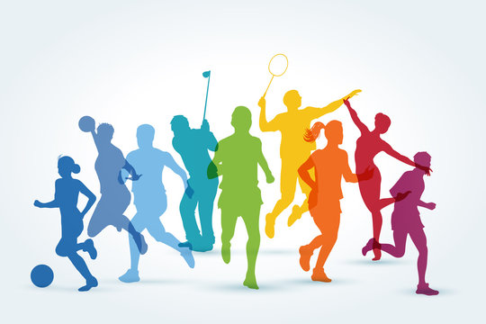
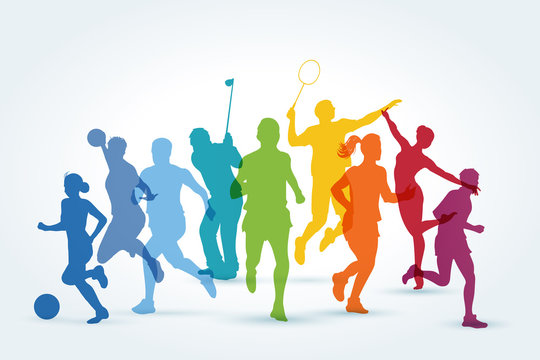

'Sport' means all forms of physical activity which, through casual or organised participation, aim at expressing or improving physical fitness and mental wellbeing, forming social relationships or obtaining results in competition at all levels.
Dancing, Swimming, Cycling, Climbing stairs or hills, Playing tennis or basketball.
Fighting for a common goal with a group of players and coaches teaches you how to build teamwork and effectively communicate to solve problems. Sports can also help you reach your fitness goals and maintain a healthy weight. However, they also encourage healthy decision-making such as not smoking and not drinking alcohol.
Dancing can be a way to stay fit for people of all ages, shapes and sizes. It can improve our muscle tone, strength, endurance and fitness. We can meet new friends when we are dancing with others together.
Swimming is a healthy activity that you can continue for a lifetime. Swimming is a low-impact activity that has many physical and mental health benefits. As well as being fun, swimming is a great way to keep fit and make friends. Make sure you know how to swim and do so in a safe environment.
Cycling can help to protect you from serious diseases such as stroke, heart attack, some cancers, depression, diabetes, obesity and arthritis. Riding a bike is healthy, fun and a low-impact form of exercise for all ages. Cycling is easy to fit into your daily routine by riding to the shops, park, school or work.
Climbing is way more than just a fun thing to try. Done regularly it has huge health benefits. From increasing strength and building muscle, to a more engaging form of cardio, and a great way to practice stretching and flexibility. It can also improve our heart health and decreasing the risk of certain respiratory problems.
Tennis is a good sport for maintaining health, fitness, strength and agility. It also has social and psychological benefits. You can play with a club or with friends and family as a social activity. Basketball teaches you about being a good team player and can be a great social sport.
Sports is the seed for the overall development of one's personality. Therefore, the importance of sports should never be underestimated.